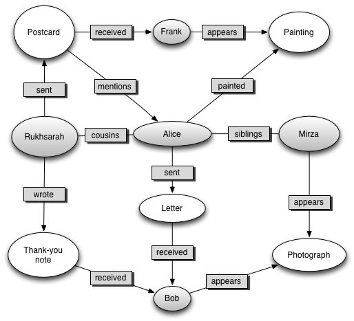
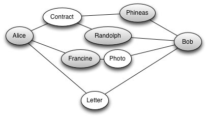
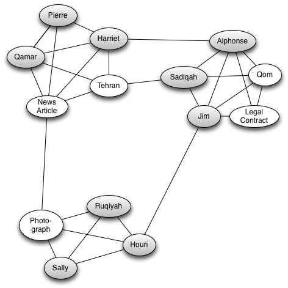
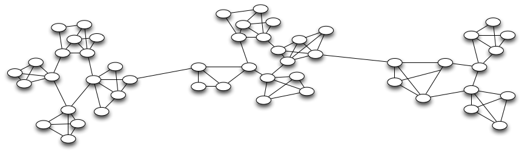

WWQI Technical Assets
Old Site
Standard Issue
The Elephant in the Room
Performance
Lead to maintainability problems
Needed a new approach
Age old computer wisdom:
When in doubt, solve a different problem
"Right Tool for the Job"
Search site
Content Management System
Static Generator
Harvard Library System
CMS
Rails on Heroku
Search Site
Sinatra + ElasticSearch on Heroku
Static Pages
S3 with CloudFront
Site is Live!
Publication Model
Much easier to maintain
Easy to iterate on
Code
Design
Content
ElasticSearch is Awesome!
Fulltext Search
On Any Field
In Any Language
Fast
Graphs
Easy to ask Hard Questions
How important is a given object in a social network?

How are two disparate items related?

What social groups form?

Social Graph
What can we do with the social graphs?
The same things as with the object graphs!
How important is a given social group?
How are two social groups connected?
Where are the social supergroups?

We can keep examining this structure
We want to build this structure automatically
- Inferring Social Groups
- Inferring nth-order relations
- Cache Metrics (Importance, Transitivity, etc)
Questions we can answer:
How Important is this object in the context of other objects?
Centrality Metrics
How likely is it that these two objects interacted?
GBN
(Generalized Bacon Number)
How Contested was this item?
Distribution of Short Paths Metric
How cohesive was this Group of People?
Clique-factor Metric
What Social Groups does this Object fit into?
Minimal Clique Finding Algorithm
Support research claims
Help guide research
Identifying items of interest
We know how to build these tools.
It's not to good to be true.
How can we make this happen?
What we've done:
Make it easier to enter data
Build the Neo4j Graph
We want to build:
UI for non-programmers to ask Graph Questions
Inference Engines
We did more than just build WWQI
Released two libraries!
Graphable:
Extracts a semantic graph from a app
Enviable:
Provides a configuration management interface for 12-factor apps
More Potential Libraries!
Searchable: Extract Search Indexes from an app
Static Page Generator
Powerful for other projects to generate multilingual static sites
Requires some effort
But that's not all, we uncovered bugs, built fixes, wrote blog posts,
and generally gave back as much as we could to the community of OSS
developers we depend on.